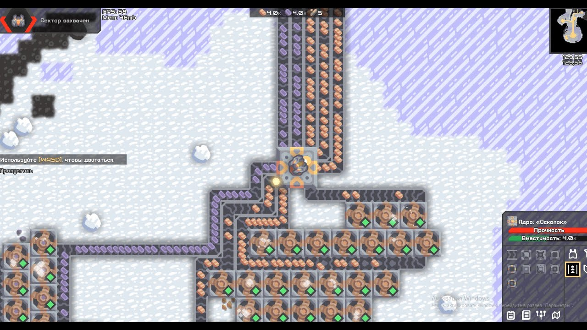
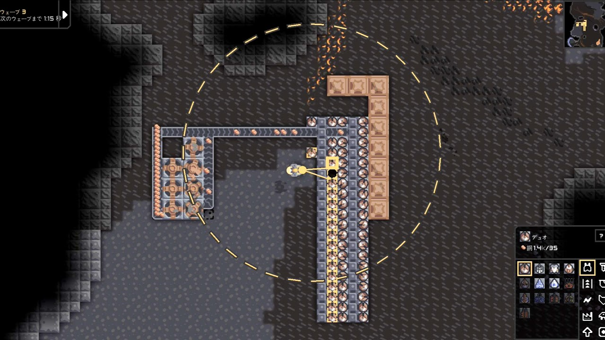
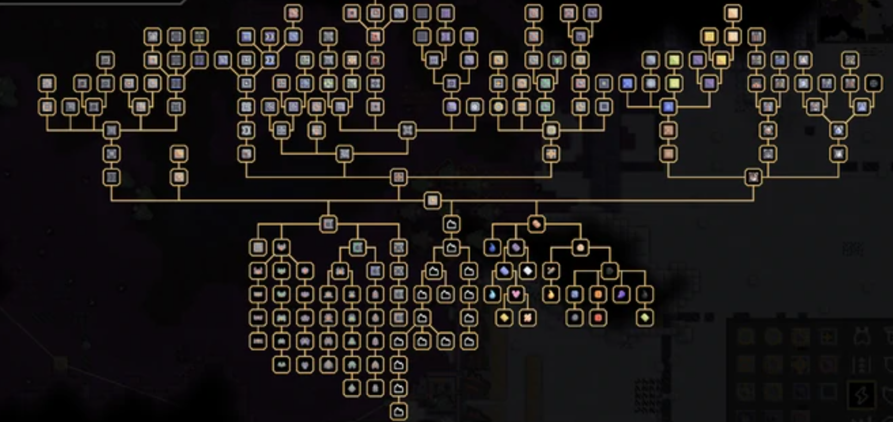

Введение
Mindustry может показаться сложной игрой на первый взгляд — десятки ресурсов, схемы, логистика и волны врагов. Но не переживай: разобраться можно быстро, если знать правильные шаги. В этом гайде ты узнаешь, как не допустить типичных ошибок и уверенно развиваться с самого начала.
1. Освой базовые принципы добычи ресурсов
Первое, что тебе нужно — это стабильный поток ресурсов. Начни с меди и свинца: они используются почти во всех постройках.
Размещай конвейеры как можно короче и избегай лишних поворотов — так ты ускоришь доставку. Если видишь, что ресурсы часто “забиваются” на конвейере — значит, пора улучшить добычу или увеличить пропускную способность.
💡 Совет: всегда оставляй место для расширения цепочек. Ты удивишься, как быстро перерастёшь первые установки.

2. Не забывай про энергию
Уже через несколько минут игры тебе понадобится энергия для фабрик и турелей. Начни с генераторов сгорания и позже переходи на солнечные панели и паровые турбины.
Важно продумывать расположение энергетических линий заранее — так ты избежишь путаницы в будущем.

3. Создавай продуманную оборону
Даже на простых картах враги быстро становятся сильнее. Используй медные и титаново-графитовые турели, ставь стены перед ними и не забывай про ремонтные дроны.
Постепенно усиливай оборону слоями и улучшай подачу боеприпасов по конвейерам.
🔰 Никогда не оставляй открытые участки — враги всегда найдут слабое место.
4. Используй исследования с умом
В Mindustry ключ к прогрессу — это исследования. Сначала открывай только те технологии, что нужны прямо сейчас: новые конвейеры, буровые установки и источники энергии.
Не распыляй ресурсы на всё подряд — фокусируйся на практичном развитии.
5. Не бойся экспериментировать
Mindustry — это игра о креативности. Пробуй разные схемы, тестируй логические узлы, строй автоматические линии — это лучший способ учиться.
⚙️ Каждый “неудачный” билд — это шаг к более эффективной базе.
Заключение
Теперь ты знаешь, как быстро освоиться в Mindustry и избежать ошибок новичков. Главное — развивай добычу, обеспечивай энергию, продумывай защиту и не бойся экспериментировать.
С каждым новым этапом ты будешь понимать механику игры всё глубже — и получать настоящее удовольствие от прогресса!